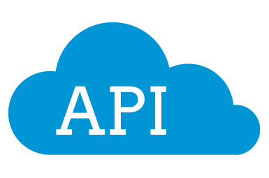

About Me
I am a third year student studying Informatics at the University of Washington Seattle! What is Informatics exactly? Well, Informatics designs technology for the good of people. Follow this link to learn more.
I am primarily a front-end web developer with experience using JavaScript frameworks like React, Express, Node, etc. I have a background in Java and Python and would like to learn more and hopefully create my own software.
Linguistics is my minor and I enjoy talking about language and how it relates to coding.

Skills


My Projects
Web Development
Grocery List Project (Javascript, PHP, SQL)
Yelp Business App (R, Shiny, Yelp API)
News at a Glance (JavaScript, News API)
Rate My Professor MyPlanExtension (CSS, JavaScript, PHP)
FeelingFeed (JavaScript, Bootstrap, PHP)
SpotiViz (React, Node)
help.me (React, Firebase)
Software Development
Stream Editor Python Program (Python)
Wikipedia and Lyrics Scraping - In Progress (Python)
Faceboook Messenger Chatbot - In Progress (Python)
Highlight Generator (Python)
My Interests
-
Web Scraping
I have a passion for using technologies to scrape (or data mine) various websites! I have used based Python packages like requests and Beautiful Soup to retrieve and process webpages. For more complicated pages (with dynamic JavaScript), I use Selenium. This can simulate a user logging into a page and loading it normally. Scraping can also be done in PHP, and more importantly JavaScript on the server side using Cheerio and Express. -

Personal APIs
When unable to find an API to do the job, I create my own! This is in the form of pulling local content on a server using PHP, or invoking other requests using Express. For various projects, I have developed simple REST APIs that assist for my front-end, either as a content generator or for authorization. Simple Express servers can be deployed to hosting services, like Heroku, and used as a public REST API! -

React Development - My Future!
React is one of my new-found passions! I recently learned the basics in my courses and now I'm able to make powerful single page applications that can have user authentication and a real-time database (using Firebase!). I hope to develop a useful React app in the future that is scalable and dynamic, I just need an idea! My goal is to combine my other passions to create an app that uses React for the front-end, a Python scraping back-end, and then Firebase for user storage.
Contact
If you would like to reach out to me, email works well!